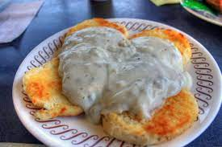

Sausage Gravy Recipe

Description
This is a simple sausage gravy recipe. The recipe assumes one has already cooked the sausage and is making the gravy from the leftover grease. Feeds 4-8
Ingredients
- Grease from Cooked Sausage Patties
- One Cup Milk
- One Cup Flour
- Pepper (to taste)
- Crumbled Pieces of Cooked Sausage
Recipe Instructions
- With a pan of leftover sausage grease, add the cup of milk and cook on medium heat
- Whisk in the cup of flour, whisking evenly as you slowly pour.
- If gravy is too thin, add more flour. If too thick, add more milk. Add either until desired consistency is reached.
- Add pieces of crumbled sausage patties.
- Add pepper to taste.
- Cook until desired consistency is achieved, stirring often.
- Serve gravy on biscuits.